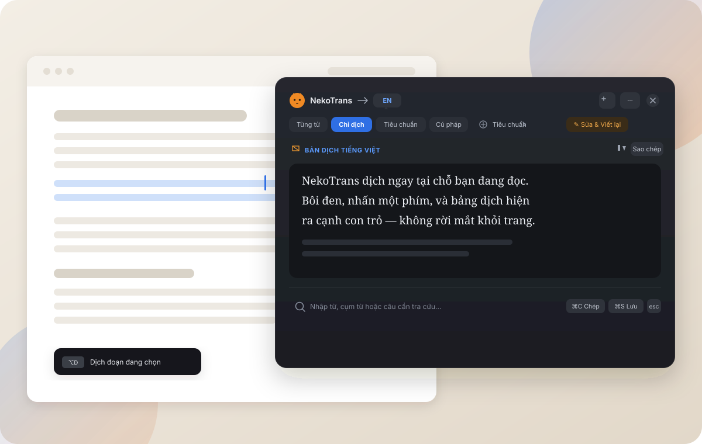
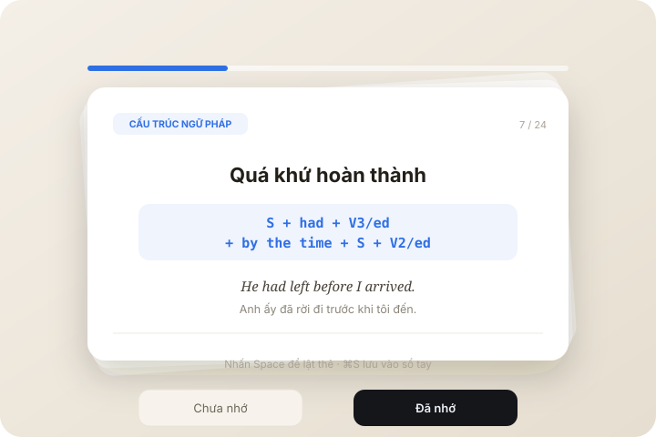

Phiên bản 1.0 · Dành cho macOS
NekoTrans 猫
Bôi đen một câu trên màn hình là có bản dịch ngay bên cạnh. Từ nào đáng học thì lưu vào sổ tay, nghe phát âm, rồi ôn bằng flashcard.
Bản dựng ký sẵn, mở là chạy. Gỡ bằng cách kéo vào Thùng rác.
Bôi đen văn bản
Chọn bất kỳ từ hay câu nào trong Safari, Chrome, PDF, Mail, Xcode hay Slack.
Nhấn phím ⌥D
Bảng dịch nổi ngay sát con trỏ chuột trong 0.2s — không cần chuyển ứng dụng.
Xem nghĩa & Lưu từ
Xem phiên âm IPA, nghe phát âm và bấm lưu vào sổ tay để ôn lại bằng flashcard.
00 Xem qua
Một tiện ích, cả bộ công cụ
Dịch, tra từ, lưu từ vựng, chép màn hình, ôn tập và thống kê — gói trong một ứng dụng menu bar, không mở thêm cửa sổ nào khi bạn đang đọc.

01 Tính năng
Sáu việc bạn làm mỗi ngày
Mỗi tính năng đều có phím tắt riêng và đổi được trong Cài đặt.
-
Bôi đen là dịch
Nhấn ⌥D (hoặc bấm bong bóng nổi cạnh vùng chọn) để dịch đoạn đang bôi đen. Bảng dịch hiện ngay dưới con trỏ, không cần chuyển ứng dụng.
-
Nhiều engine, tự chọn cái nhanh nhất
Apple dịch on-device, Google, DeepL, MyMemory và 6 nhà cung cấp AI. NekoTrans chạy song song rồi lấy kết quả về trước — engine lỗi sẽ tự tạm nghỉ thay vì treo bảng dịch.
-
Tra từ điển có phiên âm
Phiên âm IPA, nghĩa tiếng Việt, ví dụ, từ đồng nghĩa và phát âm bản xứ. Từ chia thì vẫn tra được: gõ went sẽ hiểu là go.
-
Chụp màn hình để lấy chữ
Nhấn ⌥S, khoanh vùng có chữ, NekoTrans đọc chữ trong ảnh và dịch luôn. Dùng cho ảnh chụp, video, hay đoạn chữ không copy được.
-
Tìm từ vựng trong Spotlight
Mọi mục trong sổ tay được đánh chỉ mục vào Spotlight, nên ⌘Space rồi gõ từ là ra ngay nghĩa đã lưu.
-
Sao lưu lên GitHub Gist
Đồng bộ hai chiều sổ tay và thống kê vào một Gist riêng tư, dữ liệu nén LZFSE trước khi gửi. Đổi máy thì khôi phục lại trong một lần bấm.
Kèm theo: chạy ở menu bar không chiếm Dock, phím tắt tuỳ biến, hiển thị song ngữ hoặc chỉ dịch, thống kê mục tiêu học tập, và tích hợp sâu Spotlight & Phím tắt (Shortcuts) trên macOS.
02 Sổ tay
Từ vựng và ngữ pháp, tách bạch
Mỗi mục lưu vào sổ tay đều được gắn loại ngay lúc tạo, nên từ vựng và công thức ngữ pháp có cách hiển thị riêng, không lẫn vào nhau.
Công thức ngữ pháp nằm ở khung riêng bằng chữ đẳng khoảng màu xanh, ngay trên đầu mục — không trộn lẫn với phần nghĩa.
- Phân tích AI sáu phần. Từ loại và tầng nghĩa, họ từ, collocation, sắc thái dễ nhầm, ví dụ, mẹo ghi nhớ.
- Tự chống trùng. Lưu lại cùng một từ thì cập nhật mục cũ, không tạo thêm dòng.
- Tìm kiếm và lọc. Lọc theo từ vựng, ngữ pháp, yêu thích, đã ghi nhớ.

03 Ôn tập
Học lại đúng thứ bạn sắp quên
Thẻ lật hai mặt lấy dữ liệu từ chính sổ tay: mặt trước là từ hoặc công thức, mặt sau là nghĩa và ví dụ.
- Đánh dấu đã nhớ / chưa nhớ để lần sau chỉ ôn phần còn yếu.
- Lọc theo bộ thẻ: tất cả, chỉ từ vựng, chỉ ngữ pháp, mục yêu thích.
- Thống kê theo ngày để biết mình có đang giữ nhịp hay không.

04 Riêng tư
Khoá API nằm trong Keychain, không phải trong file cấu hình
Nhiều ứng dụng dịch lưu khoá API dạng văn bản thường trong thư mục cấu hình — đọc được bằng bất kỳ tiến trình nào. NekoTrans thì không.
-
Khoá và token trong Keychain
Sáu khoá API và token GitHub đều nằm trong Keychain của macOS. Bản cũ còn sót trong cấu hình sẽ được chuyển sang Keychain ở lần chạy đầu, rồi xoá đi.
-
Dữ liệu học ở lại máy
Sổ tay, lịch sử dịch, thống kê và cache đều nằm trong thư mục Application Support của bạn. Không có máy chủ trung gian nào của NekoTrans.
-
Chỉ gọi ra ngoài khi bạn yêu cầu
NekoTrans chỉ kết nối tới engine bạn chọn, và tới GitHub nếu bạn tự bật đồng bộ. Không có tài khoản, không telemetry, không quảng cáo.
-
Nội dung bạn dịch không vào log
Nhật ký chỉ ghi lỗi kỹ thuật. Phần chữ bạn bôi đen được đánh dấu riêng tư, nên không xuất hiện trong Console hay khi bạn gửi log cho ai đó.
05 Yêu cầu
Trước khi tải
- Hệ điều hành
- macOS 15.0 trở lên (Sequoia). Bản dịch on-device dùng framework Translation của Apple, chỉ có từ macOS 15.0.
- Kiến trúc
- Universal Binary (chạy mượt trên cả Apple Silicon M1–M4 và Intel).
- Dung lượng
- Khoảng 14 MB. Không kèm model AI nào — engine on-device do macOS cung cấp.
- Quyền cần cấp
- Trợ năng để lấy đoạn văn bản đang chọn · Ghi màn hình cho tính năng chụp chữ màn hình (OCR).
- Tài khoản
- Không cần. Chỉ khi bạn muốn dùng engine AI trả phí thì nhập khoá API của riêng bạn — khoá được lưu trong Keychain.
- Gỡ cài đặt
-
Kéo ứng dụng vào Thùng rác. Dữ liệu học nằm trong
~/Library/Application Support/NekoTransnếu bạn muốn xoá sạch.
06 Hỏi đáp
Câu hỏi thường gặp
Những điều người dùng Mac thường quan tâm trước khi cài đặt.
NekoTrans có cần kết nối Internet để hoạt động không?
Khóa API và dữ liệu của tôi có an toàn không?
Ứng dụng hỗ trợ dòng máy Mac nào?
Tôi có thể đồng bộ sang máy Mac khác không?
Cài xong là dịch được ngay
Không đăng ký, không cấu hình. Tải về, mở lên, bôi đen một câu bất kỳ và nhấn ⌥D.